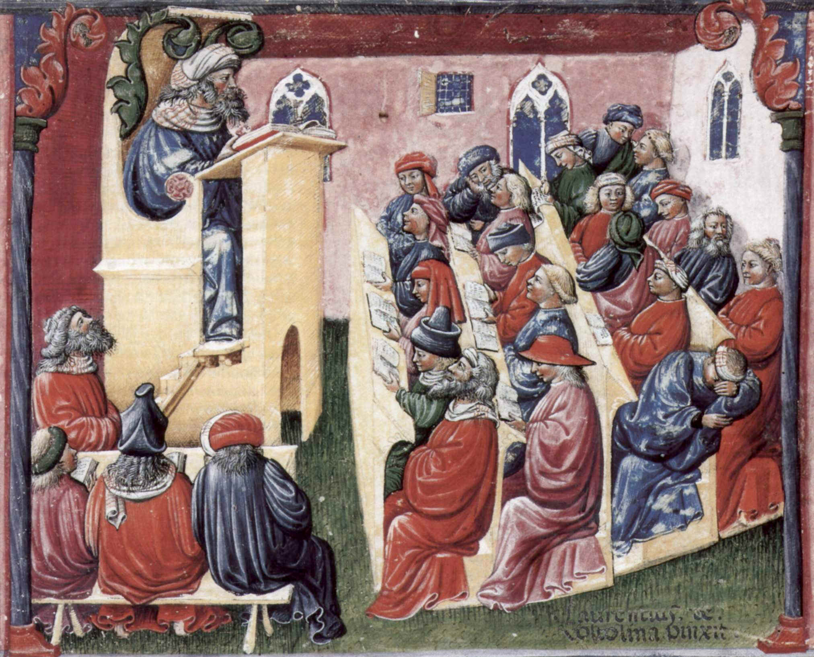

 |
Scholasticism Scholasticism is the philosophy and theology of Western Christendom in the Middle Ages. Basic to scholastic thought is the use of reason to deepen the understanding of what is believed on faith, and ultimately to give a rational content to faith. Its formal beginnings are identified with St. Anselm (late 11th cent.), who tried to prove the existence of God by purely rational means. Abelard stressed the rational approach in considering the most important philosophical question of the 12th cent., the question of universals (see Nominalism; Realism). The early church fathers, notably St. Augustine, incorporated Plato's doctrines and Neoplatonic thought into Christian theology. The 13th cent., the golden age of medieval philosophy, was marked by two important developments: the growth of universities (especially at Paris and Oxford); and the availability in Latin translation of the works of Aristotle and the commentaries of Avicenna and Averroës. The closely wrought, rational system of St. Thomas Aquinas is regarded as the greatest achievement of the scholastic age and the ultimate triumph of the effort to “Christianize Aristotle.” Later opponents of Aquinas, e.g., St. Bonaventure, Duns Scotus, and William of Occam, broke the synthesis of faith and reason. The secular currents of the Renaissance and the growth of the natural sciences brought on the decline of scholastic metaphysics, although its approach continued to be followed in politics and law. In 1879 Pope Leo XIII proclaimed the system of Aquinas to be the official Catholic philosophy. —The Concise Columbia Encyclopedia |